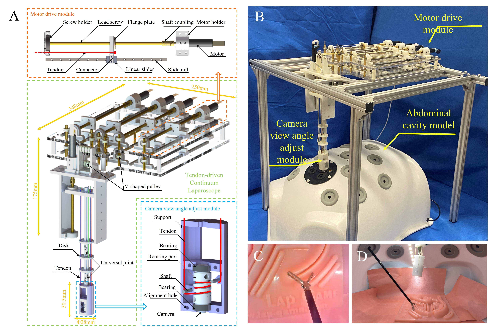
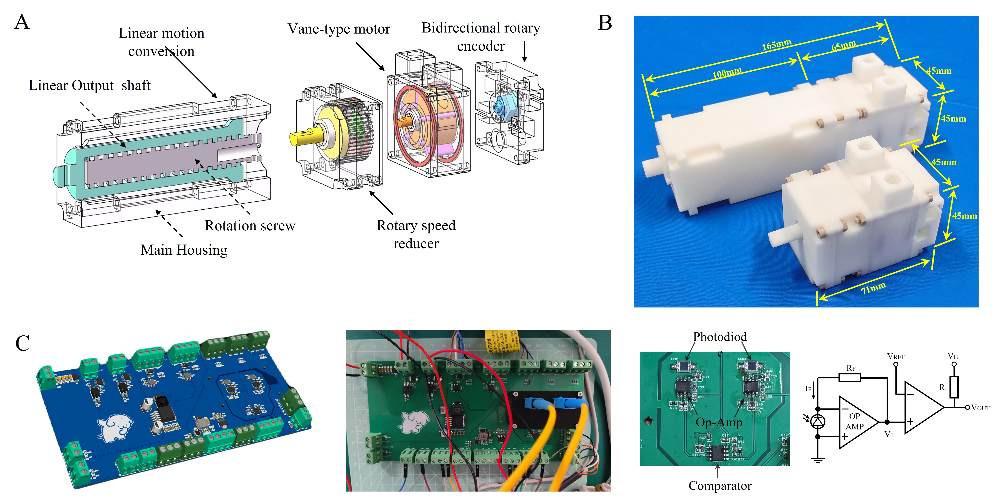
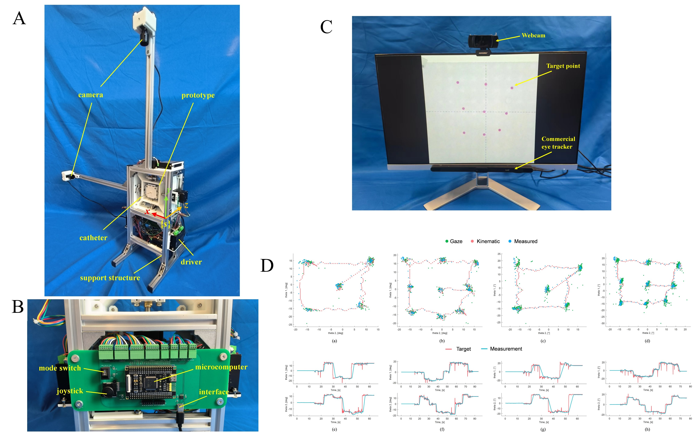
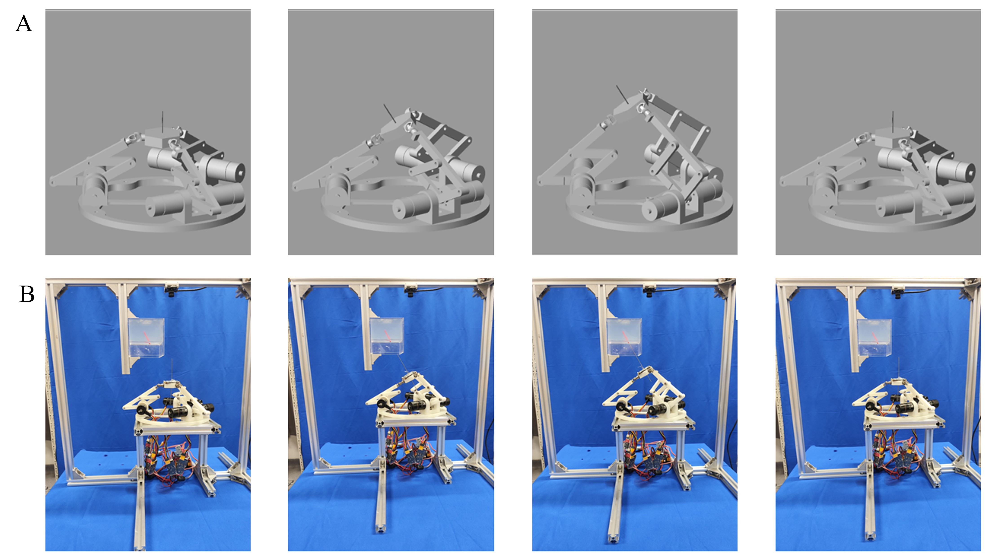

2023-2024: Automatic laparoscopic field of view (FOV) adjustment can effectively assist surgeons in minimally invasive surgery (MIS). However, existing work based on rod-shaped laparoscopes is inevitably constrained by the remote center of motion (RCM) during the process of FOV adjustment. The RCM limits laparoscopic movement and makes modeling and control more complex. Fig.A: CAD design. Fig.B: Prototype. Fig.C: View from the end camera. Fig.D: View from the outside.
Sun Yat-Sen University

2022-2024: The exceptional imaging capability of magnetic resonance imaging (MRI) enables the applications of robot-assisted surgery under MRI guidance. Essential to these robotic systems are the MRI-compatible robotic joint actuators. Among various actuation methods using MRI-compatible materials, pneumatic actuators are considered the most suitable for this application scenario due to their sterility, safety, and reliability. Yet, the current pneumatic actuators are either bulky, inefficient, or cannot achieve accurate bidirectional continuous motion. Fig.A: CAD design. Fig.A: Prototype. Fig.C: Custom-designed PCB board.
Sun Yat-Sen University

2022-2024: Robot-assisted minimally invasive needle percutaneous intervention promotes the biopsy operation accuracy and speed as well. Yet, Leksell-based needle displacement platform is bulky and unsuitable for certain applications such as MRIguided surgery. Also, controllers such as joysticks or keyboards conventionally used by surgeons to command robotic systems require extra preoperative training and intraoperative sterilization. Fig.A: Prototype. Fig.B: Custom-designed PCB board. Fig.C: Control test. Fig.D: Results compared with Tobbi-5.
Sun Yat-Sen University

2022-2024: Robot-assisted surgical systems have been widely applied for minimally invasive needle biopsies thanks to their excellent accuracy and superior stability compared to manual surgical operations, which lead to possible fatigue and misoperation due to long procedures. Current needle biopsy robots are normally customed designed for specific application scenarios, and only position-level kinematics is derived, preventing advanced speed control or singularity analysis. Fig.A: A series of biopsy puncture under SimScape simulation. Fig.B: A series of biopsy puncture of the prototype.
Sun Yat-Sen University

2020-2022: Quadrotor unmanned aerial vehicles (UAVs) have emerged as ubiquitous and agile robots and data carriers within the framework of the future Internet of Things (IoT) and mobile wireless networks. Yet, the insufficient onboard battery necessitates the optimization of energy consumption for both the UAV and IoT devices while ensuring that communication requirements are met. Fig.A: one-to-mult UAV assisted IoT networks. Fig.B: Simulation comparison of UAV trajectories with different design approaches. Fig.C: Comparison with respect to energy consumption and completion time.
Sun Yat-Sen University
2019-2020: Soft robotics, contrast to conventional rigid-body robots made with high stiffness materials, utilizes compliance and adaptability of soft materials to interact with human and environment safely. Fluid power, both pneumatics and hydraulics, compared to other conventional actuation methods such as tendon or
shape memory alloy, has higher power density, higher efficiency, and higher bandwidth. Fig.A: A elbow-structured pneumatic actuator which can achieve linear motion. Fig.B: A miniature hydraulic power unit which can power soft robotics with high bandwidth and high energy efficiency. Fig.C: A soft bending robotic ringer.
Vanderbilt University

2018-2020: Ventricular Assist Device (VAD) and Extracorporeal membrane oxygenation (ECMO) system are two effective approaches to save heart failure patients. However, critical components such as the pump damages the blood. Specifically, hemolysis, platelet activation, microparticle generation and von Willebrand factor (vWF) degradation. Fig.A: an in-vitro circulation loop with porcine blood to test Impella 5.5. Fig.B: an in-vitro circulation loop with porcine blood to test Centrimag. Fig.C: Components of a typical ECMO system.
Vanderbilt University
University of Arizona

2018-2020: Demonstration of MCS device hemocompatibility is required for regulatory approval and subsequent human clinical use. While testing the MCS device itself, the additional loop components, such as connectors and loop geometry, would also lead to shear mediated blood damage. Fig. A: an in-vitro circulation loop with 90 deg angulation via heat-bending. Fig.B: an in-vitro circulation loop with 90 deg angulation via a T-connector. Fig.C: an in-vitro circulation loop with 5 luer connectors. Fig.D: an in-vitro circulation loop with 0 luer connectors. Fig.E: CFD simulations for shear mediated platelet activation index.
Vanderbilt University
University of Arizona
Stony Brook University
2017-2019: While mechanical circulatory support (MCS) devices, i.e. ventricular assist devices (VADs) and total artificial hearts (TAHs), are vital in restoring hemodynamics in patients with advanced heart failure, serving as either bridge to transplant or destination therapy, a significant number of adverse events have emerged for device implanted patients. Many of the observed complications are due to chronic exposure to non-pulsatile flow and the high shear stress created by the current method of blood propulsion or usage of prosthetic valves. Fig.A: A valveless pulsatile flow MCS design. Fig.B: A linear peristaltic MCS design. Fig.C: A valveless compact MCS design.
Vanderbilt University
University of Arizona

2017-2019: Though mechanical circulatory support (MCS) devices, such as ventricular assist devices and total artificial hearts (TAH), provide heart failure patients with bridges to heart transplantation or are alternatives to transplantation, device performance, and corresponding control strategies are often difficult to evaluate. Therefore, proper models are needed to size the MCS device, to control the MCS device, and to modify the MCS device. Fig.A&B: A bond graph model of cardiovascular system. Fig.C: PV loops of left and right atriums and ventricles. Fig.D: An in-vitro mock circulation device.
Vanderbilt University
University of Arizona

2015-2017: High power density, good controllability, and low cost are the most appealing characteristics that make hydraulic systems the best choice for many applications. Current state-of-the-art hydraulic variable displacement pumps still suffers from low efficiency at low displacement. Therefore, novel variable displacement hydraulic pump which has relative-high efficiency across a wide range of operation conditions is needed. Fig: A first generation prototype of variable displacement alternating flow hydraulic pump.
Vanderbilt University
University of Minnesota